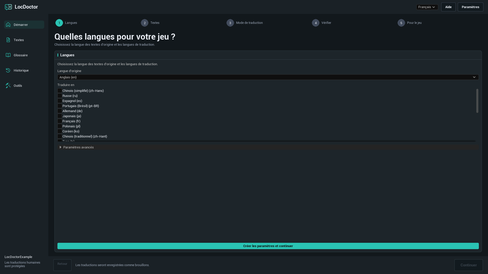
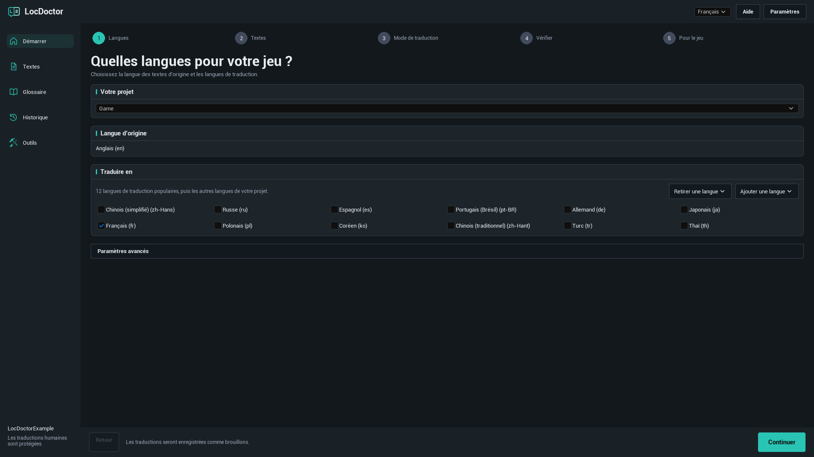
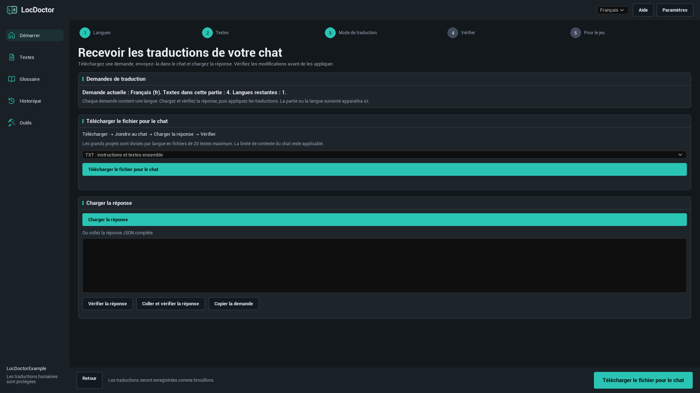
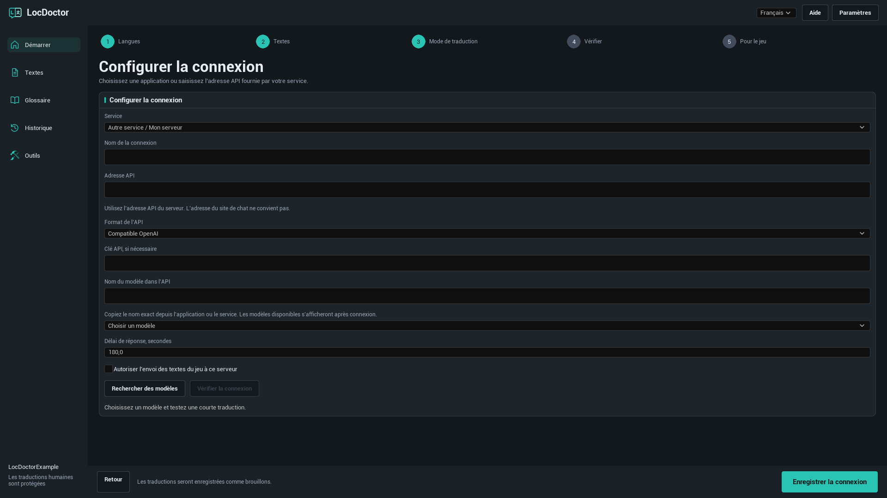
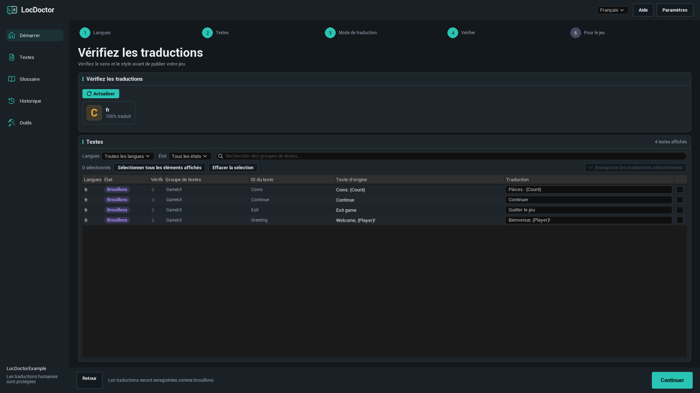
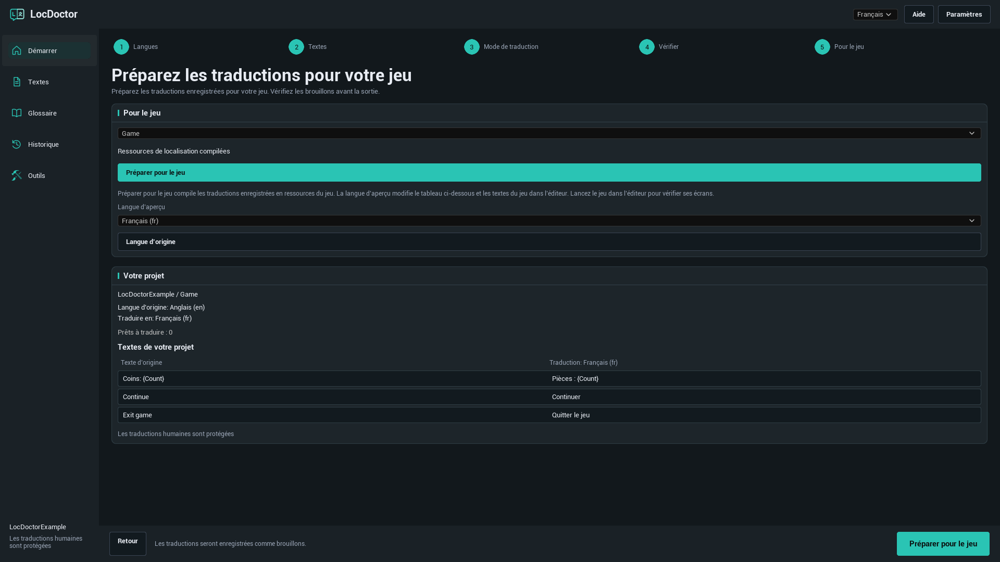

GUIDE D'UTILISATION DE LOCDOCTOR 1.0.0
Traduisez votre jeu.
Gardez le contrôle de chaque mot.
Traduisez les textes de votre jeu Unreal Engine avec un modèle local, votre chat IA ou un service API. Vérifiez les résultats dans l'éditeur, puis préparez-les pour le jeu.
Choisissez la méthode dont vous disposez déjà
BIEN DÉMARRER
Installation
LocDoctor 1.0.0 prend en charge Unreal Engine 5.7 et 5.8 sous Windows 64 bits. Utilisez le package correspondant à votre version du moteur.
Installation via Fab
Installez le plugin pour votre version du moteur depuis la bibliothèque Fab de l'Epic Games Launcher. Ouvrez votre projet, activez LocDoctor dans Edit > Plugins si nécessaire, puis redémarrez l'éditeur.
Installation depuis un ZIP
- Fermez Unreal Editor.
- Extrayez le package pour que
LocDoctor.upluginse trouve directement dans<YourProject>/Plugins/LocDoctor/. Si le ZIP contient déjà un dossierLocDoctor, placez celui-ci dans le dossierPlugins. - Ouvrez le projet. Activez LocDoctor dans Edit > Plugins si nécessaire, puis redémarrez l'éditeur.
- Ouvrez Tools > LocDoctor.
YourProject/
YourProject.uproject
Plugins/
LocDoctor/
LocDoctor.uplugin
Resources/
Source/Un package contenant les fichiers compilés comprend aussi un dossier Binaries. Avec un package de code source uniquement, Unreal a besoin d'outils de compilation C++ compatibles pour construire les modules de l'éditeur.
BIEN DÉMARRER
Votre première traduction
Commencez avec une langue et quelques textes du jeu. Les noms des boutons du plugin correspondent à la langue de ce guide. Les menus propres à Unreal Editor sont indiqués en anglais.
- Choisissez vos langues. Ouvrez Tools > LocDoctor. Sélectionnez la langue des textes d'origine du jeu et au moins une langue de traduction. Lors de la première utilisation, cliquez sur Créer les paramètres et continuer. Conservez les réglages avancés par défaut, sauf si votre projet nécessite un autre dossier de ressources ou une autre cible de localisation.
- Collectez vos textes. À l'étape Textes, cliquez sur Collecter les textes. Enregistrez les ressources du jeu modifiées si Unreal vous le demande. Vérifiez que le récapitulatif du projet contient les textes attendus.
- Choisissez une méthode. Utilisez Sur mon ordinateur, Dans mon chat ou Via une API. Pour une traduction automatique, sélectionnez un modèle et cliquez sur Vérifier la connexion. Ce test traduit un court texte. Après sa réussite, le bouton principal devient Traduire les textes.
- Vérifiez le résultat. Les traductions IA sont enregistrées comme brouillons. À l'étape Vérifier, relisez chaque traduction, corrigez-la si nécessaire et enregistrez les lignes sélectionnées.
- Préparez le jeu. Dans Pour le jeu, cliquez sur Préparer pour le jeu. Testez chaque langue dans le jeu et ajoutez-la aux paramètres d'empaquetage.

Langues et textes du jeu
Langue d'origine, langues de traduction et langue de l'interface
- Langue d’origine : la langue dans laquelle les textes sources de votre jeu sont écrits.
- Traduire en : les langues de la tâche de traduction en cours. Décochez une langue pour l'exclure de cette tâche.
- Langue de l’interface : le sélecteur en haut de LocDoctor. Il change uniquement l'interface du plugin. L'anglais est la langue par défaut.
Une cible de localisation, généralement appelée Game, définit la configuration de localisation Unreal d'un ensemble de textes. Si votre projet possède plusieurs cibles, choisissez celle à traduire.
Ajouter ou supprimer une langue

Les premières suggestions sont 12 langues de traduction populaires. Cliquez sur Ajouter une langue pour chercher une autre langue par son nom ou son code de culture Unreal. Retirer une langue retire une langue de la configuration de la cible. Les fichiers de traduction sont conservés pour vous permettre de la rajouter plus tard.
Quels textes peut-on traduire ?
LocDoctor utilise les valeurs FText localisables et les String Tables collectées par le système de localisation Unreal. Les valeurs FString ordinaires et les textes marqués culture invariant ne sont pas automatiquement localisables. Recherchez ces cas dans Outils > Vérification du projet.
MÉTHODES DE TRADUCTION
Sur mon ordinateur
Utilisez un modèle de texte téléchargé dans une application exécutée sur votre ordinateur. LocDoctor se connecte au serveur API de cette application. Il n'installe pas les applications et ne télécharge pas les modèles.
- Installez l'application de votre choix. Téléchargez un modèle de génération de texte adapté à la mémoire de votre ordinateur et prenant en charge vos langues de traduction.
- Lancez l'application et activez son serveur API local. Laissez-la ouverte pendant la traduction.
- Dans LocDoctor, choisissez Sur mon ordinateur, puis Choisir un modèle. Cliquez sur Rechercher des modèles pour actualiser la liste.
- Sélectionnez un modèle. Si le test n'a pas déjà commencé, cliquez sur Vérifier la connexion et attendez la fin de la courte traduction d'essai.
- Une fois la connexion prête, cliquez sur Traduire les textes.
Configurer votre application locale
| Application | Ce qu'il faut lancer | Adresse API par défaut |
|---|---|---|
| Ollama | Ouvrez Ollama avec un modèle de texte local téléchargé. Son serveur local démarre généralement avec l'application. | http://127.0.0.1:11434 |
| LM Studio | Ouvrez Developer et démarrez le serveur API. Rendez un modèle de texte accessible à ce serveur. | http://127.0.0.1:1234/v1 |
| Jan | Ouvrez Settings > Local API Server et démarrez le serveur. S'il demande une clé, saisissez la même clé dans LocDoctor. | http://127.0.0.1:1337/v1LocDoctor vérifie aussi le port 6767. |
| GPT4All | Ouvrez Settings > Application > Advanced et activez Local API Server. Chargez un modèle de texte. | http://127.0.0.1:4891/v1 |
Si vous avez changé le port, utilisez l'adresse indiquée par l'application. LocDoctor demande aux serveurs locaux leur liste de modèles et vérifie aussi les connexions locales enregistrées. Il n'analyse pas vos disques et n'a pas besoin du dossier d'installation.
Guides officiels : OllamaLM StudioJanGPT4All
Autre application ou port personnalisé
Choisissez Autre application ou Autre service / Mon serveur dans les paramètres de connexion. Saisissez l'Adresse API, choisissez Ollama ou Compatible OpenAI comme format API et indiquez le nom exact du modèle. Les serveurs llama.cpp, LocalAI ou vLLM peuvent fonctionner si leur point de terminaison prend en charge le format choisi.
MÉTHODES DE TRADUCTION
Dans mon chat
Utilisez un chat IA qui accepte du texte collé ou des pièces jointes. Vous envoyez vous-même la demande, puis rapportez la réponse dans LocDoctor. Cette méthode ne nécessite pas de clé API.
- Choisissez Dans mon chat. Le libellé Demande actuelle ou Première demande indique la langue et la partie de la demande en cours.
- Cliquez sur Télécharger le fichier pour le chat. Pour un premier essai, choisissez TXT : instructions et textes ensemble.
- Joignez le fichier dans votre chat IA. Demandez-lui de suivre les instructions incluses et de renvoyer la réponse complète avec les traductions demandées.
- Cliquez sur Charger la réponse pour importer le fichier de réponse. Vous pouvez aussi coller la réponse JSON complète dans le champ prévu et cliquer sur Vérifier la réponse, ou utiliser Coller et vérifier la réponse.
- Lisez l'aperçu. Si toutes les vérifications réussissent, cliquez sur Appliquer les traductions. Les traductions seront enregistrées comme brouillons.
- Téléchargez ou copiez la demande suivante et répétez jusqu'à ce qu'il n'en reste plus. Vérifiez ensuite les traductions.
Quel format de fichier choisir ?

| Format | Usage conseillé | Pièces à joindre |
|---|---|---|
| TXT | Un premier essai simple. | Un fichier contenant les instructions et les textes. |
| JSON | Un chat ou un outil à l'aise avec les données structurées. | La demande JSON avec ses instructions. |
| CSV | Un tableau à consulter ou à partager. | Le CSV et son fichier d'instructions séparé. |
La réponse peut être un fichier JSON, un TXT contenant la réponse JSON complète, ou un CSV avec les colonnes batch, culture, i et t. Utilisez Copier la demande si le chat refuse les pièces jointes. Un fichier ne supprime pas les limites de contexte ou d'envoi du chat.
Que vérifie le contrôle de la réponse ?
LocDoctor vérifie l'identifiant de la demande, la langue, les identifiants des textes et les variables de mise en forme. Chaque élément demandé doit figurer exactement une fois. Les textes du jeu et le glossaire doivent toujours correspondre à la demande exportée.
Si vous avez modifié le texte source, une traduction ou le glossaire après l'export, préparez une nouvelle demande. Si la réponse est incomplète ou modifie une variable, demandez au chat de la corriger. La demande active est enregistrée localement dans le projet pour permettre de reprendre après avoir rouvert l'éditeur.
MÉTHODES DE TRADUCTION
Via une API
LocDoctor envoie automatiquement les demandes au service configuré. Créez une clé API dans votre compte auprès de ce service. Vérifiez la disponibilité du modèle et les conditions de facturation avant de commencer.
- Choisissez Via une API. Sélectionnez un préréglage comme OpenRouter, OpenAI, Google Gemini ou Groq.
- Ouvrez Paramètres avancés. Saisissez votre Clé API, si nécessaire. Pour un service personnalisé, choisissez Autre service / Mon serveur et indiquez l'adresse API et le format documentés par le service.
- Cliquez sur Rechercher des modèles et sélectionnez un modèle. Si le service ne fournit pas de liste, saisissez son Nom du modèle dans l’API exact.
- Pour un serveur externe à cet ordinateur, activez Autoriser l’envoi des textes du jeu à ce serveur.
- Cliquez sur Vérifier la connexion et attendez la courte traduction d'essai. Après sa réussite, cliquez sur Traduire les textes.
Connexion à un service personnalisé

| Champ | Valeur à saisir |
|---|---|
| Nom de la connexion | Un nom facile à reconnaître, par exemple Serveur de traduction de l'équipe. |
| Adresse API | L'adresse de base de l'API documentée, par exemple https://openrouter.ai/api/v1. L'adresse d'un site de chat ne convient pas. |
| Format API | Compatible OpenAI pour un point de terminaison Chat Completions compatible, ou Ollama pour une API Ollama. Les formats API non pris en charge nécessitent une intégration distincte. |
| Clé API | La clé fournie par le service ou le serveur, s'il en demande une. |
| Nom du modèle dans l’API | L'identifiant exact attendu par le serveur. Le nom affiché sur un site peut être différent. |
| Délai de réponse, secondes | Une valeur comprise entre 1 et 600. Augmentez-la pour un modèle ou un serveur lent. |
Les clés API sont enregistrées dans les paramètres utilisateur locaux du dossier Saved/Config du projet. Ces paramètres ne sont pas chiffrés. Les clés sont exclues des fichiers de demande pour le chat, de l'historique de traduction et des rapports de LocDoctor.
VÉRIFIER ET PUBLIER
Vérifier les traductions
Les traductions IA commencent comme Brouillons. Les contrôles automatiques aident à préserver la mise en forme, mais vous devez relire le sens, le ton et le contexte.
- Ouvrez l'étape Vérifier ou la page Textes. Cliquez sur Actualiser si nécessaire.
- Utilisez les filtres de langue et de statut pour réduire la liste. La vérification guidée concerne les langues de traduction sélectionnées.
- Comparez le texte d'origine et la traduction. Modifiez le champ de traduction si nécessaire. Vérifiez les noms, la terminologie, les variables, les sauts de ligne et les problèmes signalés.
- Sélectionnez les lignes à enregistrer et cliquez sur Enregistrer les traductions sélectionnées.
- Vérifiez les écrans traduits dans votre jeu avant sa sortie.
| État | Signification |
|---|---|
| Non traduit | Aucune traduction enregistrée pour ce texte et cette langue. |
| Brouillons | Une traduction IA est enregistrée et attend une vérification. |
| Vérifié | La traduction a été marquée comme vérifiée. |
| Traduction humaine | Une traduction humaine est protégée contre le remplacement automatique habituel. |
| Traductions obsolètes | Le texte source a changé depuis la traduction. Comparez-la avec le texte actuel. |
Comprendre le compteur de progression

La progression compte les couples texte et langue. Un texte source traduit en quatre langues représente quatre tâches. Traité indique le nombre de tâches traitées. Consultez les résultats enregistrés et les erreurs éventuelles pour confirmer les réussites.
L'arrêt d'une traduction automatique conserve les résultats terminés. Vous pouvez reprendre le travail restant si la tâche enregistrée est disponible. Les traductions humaines existantes sont protégées dans les tâches automatiques habituelles.
Variables de mise en forme
Conservez les variables comme {Player} et {Count}, les balises Rich Text et les sauts de ligne. Les demandes de chat peuvent remplacer la mise en forme par des tokens protégés comme ⟦LD0⟧. Le modèle doit les recopier exactement. LocDoctor rétablit la mise en forme d'origine lors de l'application d'une réponse valide.
Les expressions complexes de pluriel et de genre nécessitent une vérification manuelle. Traduisez le texte de chaque branche sans modifier la structure de l'expression.
Glossaire et historique
Gardez une terminologie cohérente
- Ouvrez Glossaire et cliquez sur Ajouter.
- Saisissez un terme. Choisissez Ne pas traduire pour un nom à conserver, ou Traduction imposée pour imposer une traduction précise.
- Définissez les traductions pour les langues voulues et activez la distinction entre majuscules et minuscules si nécessaire.
- Cliquez sur Enregistrer avant de préparer de nouvelles demandes.
Vous pouvez conserver le nom d'un personnage ou imposer une traduction cohérente d'un terme de jeu dans chaque langue. Le glossaire est inclus dans les nouvelles demandes. Le modifier peut invalider une demande de chat déjà exportée.
Rétablir une modification antérieure
Ouvrez Historique, retrouvez le lot enregistré par cible, langue et date, puis cliquez sur Restaurer. LocDoctor recherche les modifications plus récentes avant de rétablir les anciennes données. En cas de conflit, examinez-les d'abord.
Si une écriture a été interrompue, Restaurer les modifications interrompues peut apparaître à la prochaine ouverture. Utilisez Restaurer pour rétablir les fichiers d'origine sauvegardés avant de continuer.
VÉRIFIER ET PUBLIER
Préparer pour le jeu
Cette étape compile les traductions enregistrées en ressources de localisation Unreal. Le jeu final utilise ces ressources. L'interface d'éditeur de LocDoctor ne s'exécute pas dans le jeu distribué.
- Terminez la vérification des traductions destinées à la sortie du jeu.
- Ouvrez Pour le jeu, choisissez la cible de localisation et cliquez sur Préparer pour le jeu. Attendez le message Ressources de localisation compilées.
- Choisissez une Langue d’aperçu. L'exemple de texte du projet et les textes localisés du jeu dans l'éditeur sont actualisés. Lancez le jeu dans l'éditeur et vérifiez ses écrans.
- Cliquez sur Langue d’origine pour terminer l'aperçu.
- Ouvrez Project Settings > Packaging > Localizations to Package et incluez toutes les langues du jeu final. Vérifiez que les paramètres d'internationalisation contiennent les données de ces langues, puis testez une version empaquetée.
Recompilez après avoir enregistré de nouvelles traductions. Si une langue fonctionne dans l'éditeur mais manque dans le jeu empaqueté, vérifiez que ses ressources de localisation et données de culture sont incluses.

Si des caractères manquent ou apparaissent sous forme de carrés, ouvrez Outils > Polices. Vérifiez les polices du jeu et leurs polices de substitution pour la langue concernée.
Outils et échange de fichiers
Vérification du projet
Ouvrez Outils > Vérification du projet et lancez une vérification. Examinez les emplacements signalés : chaînes inscrites en dur, textes culture invariant, clés en conflit ou phrases assemblées à partir de fragments peuvent empêcher la localisation. La première vérification peut être plus longue pendant le chargement des ressources Unreal.
Polices
Ouvrez Outils > Polices pour vérifier que les polices choisies contiennent les caractères de vos traductions. Examinez les caractères manquants et les vérifications incomplètes, puis testez les écrans réels du jeu.
Travailler avec un traducteur
Ouvrez Outils > Import et export pour échanger les traductions via des fichiers CSV ou PO.
- Exportez la cible et la langue sélectionnées au format souhaité.
- Le traducteur doit modifier les traductions en conservant les identifiants des textes, les textes sources et les variables.
- Importez le fichier reçu et vérifiez les modifications proposées.
- Résolvez les conflits avec Conserver les traductions du projet ou Utiliser les traductions du fichier, puis cliquez sur Enregistrer les traductions importées.
Le CSV de demande de chat et le CSV d'échange avec un traducteur correspondent à des usages différents. Importez une réponse de chat via Dans mon chat > Charger la réponse. Les fichiers XLSX et XLIFF ne sont pas pris en charge dans cette version.
Résoudre les problèmes
LocDoctor n'apparaît pas dans Tools
Recherchez et activez LocDoctor dans Edit > Plugins, puis redémarrez l'éditeur. S'il manque dans la liste des plugins, vérifiez le dossier d'installation et le package adapté à votre version du moteur. Pour un package de code source uniquement, installez les outils C++ compatibles avec Unreal et compilez la cible de l'éditeur.
Aucun texte n'a été collecté
Enregistrez les ressources du jeu, vérifiez le dossier de collecte de la cible et relancez la collecte. Les textes doivent être des FText localisables ou des String Tables inclus dans la configuration de collecte Unreal. Lancez Outils > Vérification du projet pour repérer les chaînes inscrites en dur ou non localisables.
La traduction des textes est indisponible
Choisissez au moins une langue de traduction et collectez les textes. Pour les méthodes automatiques, sélectionnez un modèle et effectuez d'abord Vérifier la connexion. S'il ne reste aucun texte à traduire, modifiez les traductions existantes dans Textes ou collectez de nouveaux textes et choisissez une autre langue.
La liste des modèles locaux est vide
Laissez l'application ouverte, activez son serveur API local et installez ou chargez un modèle de texte. Vérifiez l'adresse API et le port. Pour un serveur personnalisé, saisissez le nom exact du modèle dans les paramètres avancés. Une application installée n'implique pas que son serveur API fonctionne.
La vérification de connexion dépasse le délai
Laissez le temps au modèle local de se charger, fermez les autres applications utilisant la mémoire vidéo ou choisissez un modèle plus petit. Augmentez Délai de réponse, secondes. Si le serveur ne répond jamais, vérifiez son adresse, son port et si un proxy système redirige les demandes localhost.
L'API renvoie 401 ou 403
Vérifiez que la clé appartient au service sélectionné, reste valide et autorise l'accès au modèle. Pour un serveur local avec authentification, utilisez la clé des paramètres de son serveur API.
L'API renvoie 429 ou une erreur de modèle
Patientez avant de réessayer ou choisissez un autre modèle disponible. Vérifiez les limites du compte et la disponibilité du modèle auprès du service. Obtenir la liste des modèles ne garantit pas que le service pourra traduire.
La demande de chat ne contient qu'une de mes langues
C'est prévu. Chaque demande contient une langue et jusqu'à 20 textes. Chargez, vérifiez et appliquez la réponse, puis préparez la suivante. La langue actuelle ou suivante apparaît au-dessus des commandes de fichiers.
Ma réponse de chat a été refusée
Utilisez la réponse complète à la demande active. Demandez au chat de renvoyer chaque élément exactement une fois, de conserver batch et culture ainsi que toutes les variables. Si vous avez modifié les textes du projet ou le glossaire après l'export, créez une nouvelle demande.
Changer la langue d'aperçu ne change pas le jeu
Enregistrez vos traductions, puis cliquez d'abord sur Préparer pour le jeu. Vérifiez que la cible choisie contient des traductions dans la langue d'aperçu. L'aperçu concerne les textes localisés du jeu, pas les menus d'Unreal Editor. Les chaînes ordinaires et les textes non collectés restent inchangés.
Une langue manque dans le jeu empaqueté
Compilez les dernières traductions enregistrées. Ajoutez la langue dans Project Settings > Packaging > Localizations to Package et incluez ses données de culture dans les paramètres d'internationalisation. Testez une nouvelle version empaquetée.
Les caractères traduits apparaissent comme des carrés
Vérifiez la police du jeu et ses polices de substitution pour cette langue. Utilisez Outils > Polices pour vérifier les caractères couverts, puis testez les widgets et les écrans réels du jeu.
Questions fréquentes
Faut-il un abonnement IA payant ?
Aucun abonnement n'est inclus dans LocDoctor. Utilisez un modèle local, votre propre accès au chat ou l'API de votre service. La disponibilité, les limites et les frais éventuels dépendent de l'application ou du service choisi.
La traduction locale fonctionne-t-elle sans Internet ?
Oui, avec un modèle déjà téléchargé qui fonctionne localement. Internet peut être nécessaire pour télécharger l'application et le modèle. Un modèle hébergé dans le cloud utilise toujours son fournisseur, même si l'application s'exécute sur votre ordinateur.
LocDoctor traduit-il les images, la voix ou les sous-titres vidéo ?
Il traduit les textes localisables du jeu collectés par Unreal. Le texte des images, l'audio et les sous-titres vidéo nécessitent leurs propres textes sources et un traitement distinct.
Supprimer une langue efface-t-il ses traductions ?
Non. Retirer une langue retire la langue de la configuration de la cible, mais conserve les fichiers de traduction. La décocher l'exclut seulement de la tâche en cours.
Quelles langues d'interface sont disponibles ?
Anglais, russe, allemand, français, espagnol, portugais du Brésil, chinois simplifié, japonais et coréen. Les langues de traduction du jeu se configurent séparément.
Le jeu distribué a-t-il besoin de LocDoctor ou d'une connexion IA ?
Le plugin s'utilise dans Unreal Editor. Le jeu final utilise les ressources de localisation compilées d'Unreal. Jouer ne nécessite donc ni modèle de traduction ni accès au service.
Version et assistance
Ce guide concerne LocDoctor 1.0.0 pour Unreal Engine 5.7 et 5.8 sous Windows 64 bits.
1.0.0
Traduction des textes du jeu avec modèles locaux, fichiers de chat et API compatibles. Configuration des langues, vérification des brouillons, glossaire, historique, compilation de localisation, vérification du projet et des polices, échange CSV / PO.
Signaler un problème
Contactez l'assistance : nexusforgeuesupport@gmail.com.
Indiquez vos versions d'Unreal Engine et de LocDoctor, la méthode de traduction et le message d'erreur exact. Pour une connexion, ajoutez le nom de l'application ou du service et du modèle. Une capture en taille réelle permet de montrer l'étape actuelle.
Retirez les clés API et les autres informations privées des captures et des journaux avant de les partager.